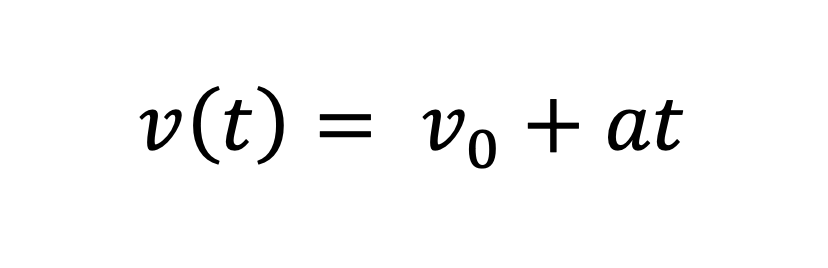
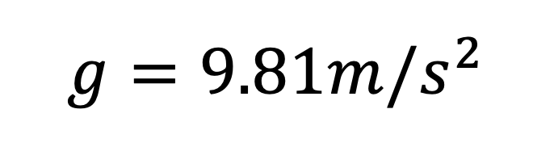

Click to see a full analysis of data collected from the project


Welcome to IGCSE Mathematics (0580) taught by Mr. George. By taking this course, you are encouraged to develop mathematical ability as a key life skill, and as a strong basis for further study of mathematics or to support skills in other subjects.
Acceleration is the rate at which the velocity of an object changes over time. An object’s acceleration is the result of the sum of all the forces acting on the object, as described by Newton’s second law. Under ideal circumstances, gravity is the only force acting on a freely falling object. In this lab, you will measure the displacement of a freely falling object, calculate the average velocity of a falling object at set time intervals, and calculate the object’s acceleration due to gravity.
The objectives of this experiment are as follows:The instant when the ball is released is considered to be the initial time t = 0. The position of the ball along the ruler is described by the variable y. The position of the ball at a time t is given by
where y0 is the initial position of the ball. The velocity of the ball at a time t is given by
Likewise, the relationship between the instantaneous velocity and time can be measured by the equation:
The acceleration due to gravity varies slightly, depending on the latitude and the height above the earths surface. In this experiment the change in height of the falling object is negligible and can be approximated as 0 km for its entire descent. The standard gravitational acceleration on Earth is:

Click to see a full analysis of data collected from the project